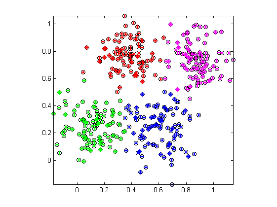

kMeansClusteringOnDist
K-means clustering on the distance matrix only
Contents
Syntax
- centerIndex = kMeansClusteringOnDist(distMat, clusterNum)
- centerIndex = kMeansClusteringOnDist(distMat, clusterNum, option)
- [centerIndex, U, objFun] = kMeansClusteringOnDist(...)
Description
[centerIndex, U, objFun] = kMeansClusteringOnDist(distMat, clusterNum) performs Forgy's k-means clustering on a given distance matrix.
- distMat: distance matrix whose elements are the pairwise distances of the data objects to be clustered
- clusterNum: number of clusters
- centerIndex: final indices of cluster centers
- U: final partition matrix
- objFun: values of the objective function during iterations
- option is an optional argument to control clustering parameters, stopping criteria, and message display during iteration:
- option.maxIter:Max. number of iteration (default: 100)
- option.minImprovement:Min. amount of improvement (default 1e-5)
- option.messageDisplay:Message display during iteration (default: 1)
The clustering process stops when the max. number of iteration is reached, or when the objective function improvement between two consecutive iteration is less than the min. amount of improvement specified.
This function is different from kMeansClustering in that the given input is a distance matrix instead of a data matrix.
- index=find(U(i, :) == maxU);
- line(data(1,index), data(2,index), 'linestyle', 'none', 'marker', '*', 'color', getColor(i));
data=dcData(6);
data=data.input;
distMat=distPairwise(data, data);
clusterNum=4;
[centerIndex, U, objFun] = kMeansClusteringOnDist(distMat, clusterNum);
plot(data(1,:), data(2,:), 'ok'); axis image;
maxU = max(U);
for i=1:clusterNum
end
Example
data=dcData(6); data=data.input; distMat=distPairwise(data, data); clusterNum=4; [centerIndex, U, objFun] = kMeansClusteringOnDist(distMat, clusterNum); plot(data(1,:), data(2,:), 'ok'); axis image; maxU = max(U); for i=1:clusterNum index=find(U(i, :) == maxU); line(data(1,index), data(2,index), 'linestyle', 'none', 'marker', '*', 'color', getColor(i)); end
Iteration count = 1, obj. function = 24.837547 Iteration count = 2, obj. function = 20.923557 Iteration count = 3, obj. function = 12.540057 Iteration count = 4, obj. function = 11.463171 Iteration count = 5, obj. function = 11.455597 Iteration count = 6, obj. function = 11.455597